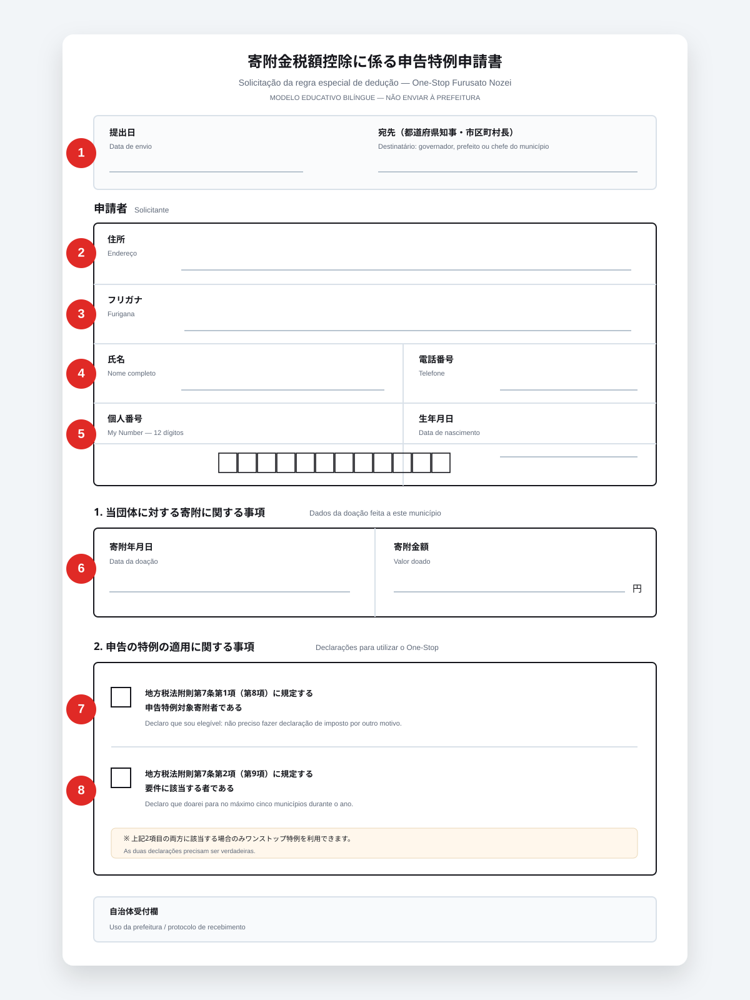
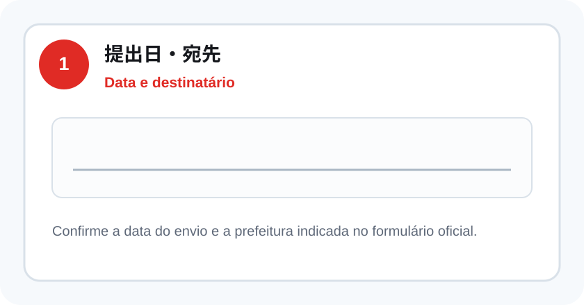
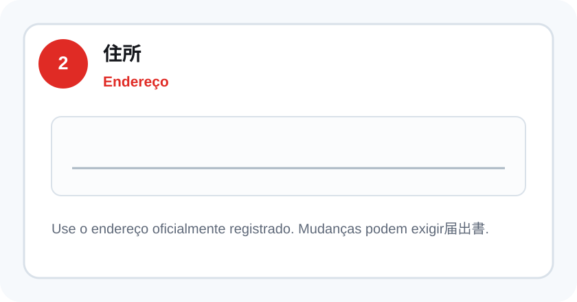
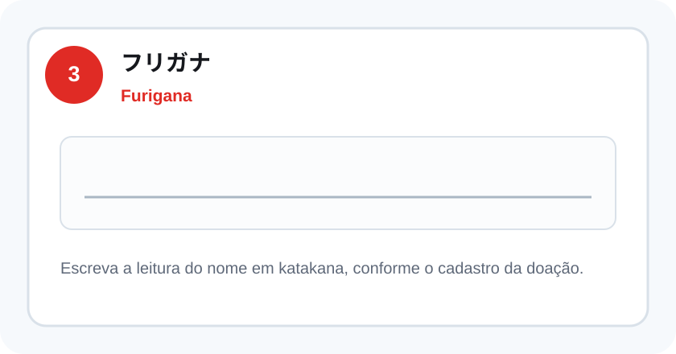
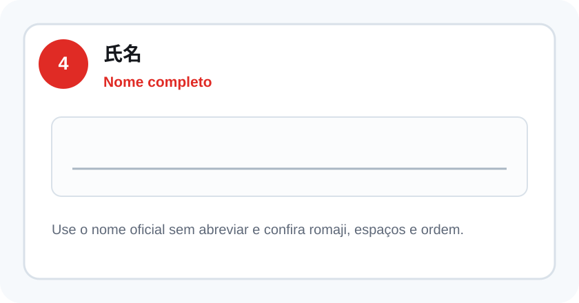
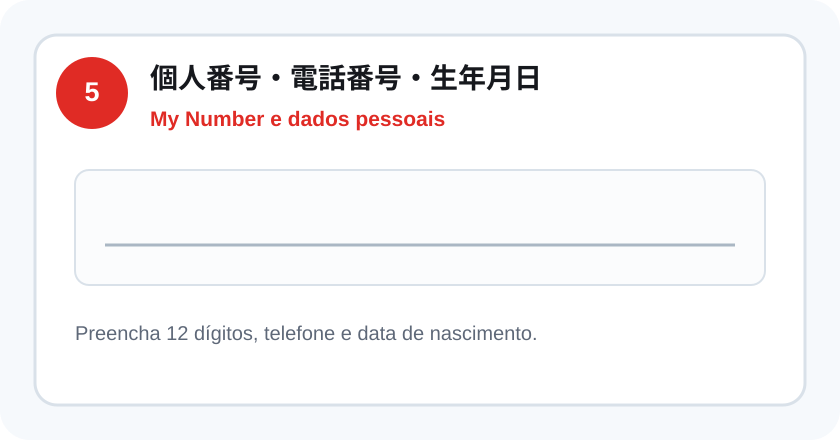
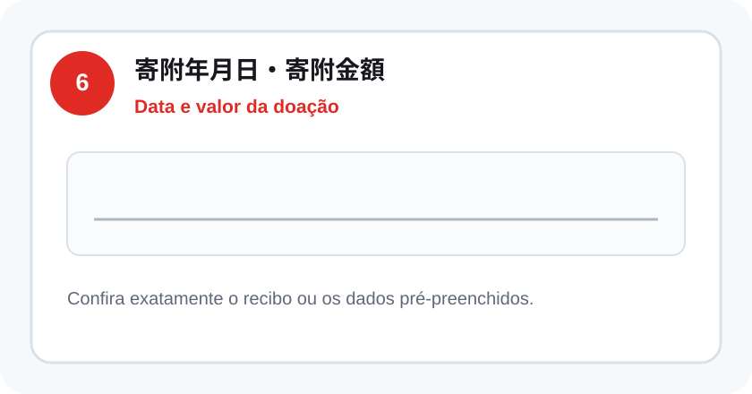
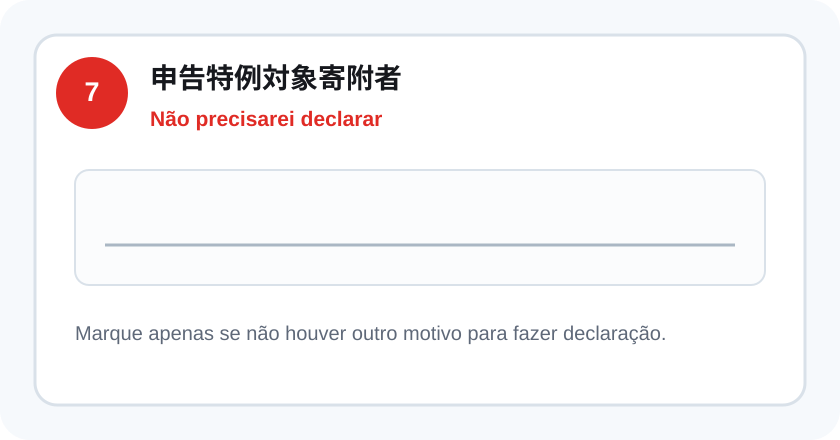
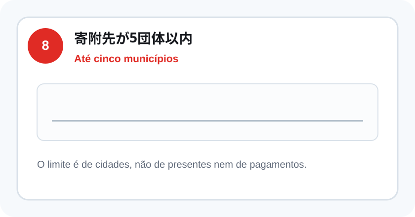
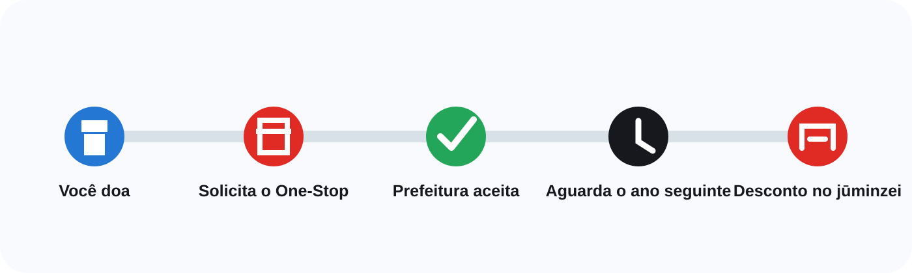

Impostos
One-Stop: como fazer sem declaração
O One-Stop permite receber o desconto do Furusato Nozei sem fazer a declaração anual de imposto — desde que você cumpra as condições.
Resposta rápida
Você pode usar o One-Stop se normalmente não precisa fazer declaração de imposto e doou para no máximo cinco municípios no ano. É preciso enviar ou concluir o pedido para cada cidade até 10 de janeiro do ano seguinte (na via papel, o que conta é a data de chegada).
Quem pode usar?
As duas primeiras condições precisam ser verdadeiras ao mesmo tempo.
Não precisa declarar
Normalmente é assalariado e não tem outro motivo para apresentar o kakutei shinkoku (declaração de imposto).
Até cinco municípios
O limite é de cinco cidades no ano — não de cinco presentes ou cinco pagamentos.
Vai fazer declaração?
Nesse caso não conte só com o One-Stop: inclua todas as doações do ano na própria declaração.
Atenção: a declaração anula o One-Stop
Se depois você fizer declaração de imposto por despesas médicas, renda extra, primeiro ano de financiamento imobiliário ou qualquer outro motivo, o One-Stop deixa de valer. Inclua todas as doações do ano na declaração, inclusive aquelas para as quais você já tinha enviado o formulário.
Como fazer em quatro passos
O pedido pode ser digital ou pelo correio, conforme a cidade e a plataforma.
- 1
Solicite o One-Stop
Durante ou depois da doação, escolha a opção de solicitar o procedimento.
- 2
Confirme sua identidade
Use o cartão My Number online ou envie as cópias de identificação exigidas.
- 3
Conclua no prazo
A cidade precisa receber o pedido correto até 10 de janeiro do ano seguinte.
- 4
Guarde a confirmação
Salve a tela, o e-mail ou o aviso de recebimento enviado pela prefeitura.
Vamos preencher o formulário juntos
Compare os termos japoneses com o formulário que você recebeu. O desenho abaixo reproduz os campos mais comuns, mas não substitui o documento oficial da prefeitura.

Modelo educativo: a diagramação, o cabeçalho, os campos pré-preenchidos, QR codes e as instruções podem variar conforme o município. Nunca envie esta ilustração.
Data e prefeitura提出日・宛先

Confirme a data do envio e o nome do município, prefeito ou governador indicado. Em muitos formulários enviados pela cidade, o destinatário já vem impresso.
Endereço住所

Use o endereço registrado oficialmente. Se nome ou endereço mudaram depois da doação, a prefeitura pode exigir o formulário de alteração (申告特例申請事項変更届出書).
Furiganaフリガナ

Escreva a leitura do nome em katakana. Confira o cadastro da doação e não invente uma forma diferente apenas para caber no espaço.
Nome completo氏名

Use o nome dos seus documentos e registros oficiais. Confira a ordem, os espaços e a grafia em romaji. Não abrevie por conta própria.
My Number e dados pessoais個人番号・電話番号・生年月日

Preencha os 12 dígitos do My Number, telefone e data de nascimento. Depois, anexe ou apresente os documentos exigidos pela prefeitura.
Data e valor da doação寄附年月日・寄附金額

Copie ou confira a data e o valor exatamente como aparecem no comprovante. Normalmente, cada doação tem seu próprio pedido.
Declaração de elegibilidade申告特例対象寄附者

Marque apenas se você não precisar apresentar declaração de imposto de renda nem de imposto residencial por outro motivo.
Até cinco municípios寄附先が5団体以内

Confirme que o total do ano será de no máximo cinco municípios. Várias doações para a mesma cidade continuam contando como uma só.
Antes de enviar, confira
Aviso importante sobre o preenchimento
Este guia e o formulário ilustrado têm finalidade exclusivamente informativa e educativa, criados para ajudar a identificar os campos mais comuns do pedido One-Stop.
A aparência do formulário, os procedimentos, os documentos exigidos, os prazos e as regras podem variar conforme o município, a plataforma e a situação individual, e podem ser alterados pelas autoridades competentes sem aviso prévio.
Use sempre o formulário oficial correspondente à sua doação e confira as instruções da prefeitura responsável. A responsabilidade pelo preenchimento correto, pela conferência das informações e pelo envio dentro do prazo é de quem faz a solicitação.
O prazo é curto
O pedido deve chegar à prefeitura — ou ser concluído online — até o dia:
10 de janeiroNão espere os últimos dias. Formulário com erro, documento ilegível ou atraso no correio pode obrigar você a fazer declaração.
Online ou pelo correio?
Os dois caminhos podem funcionar. A disponibilidade depende da cidade e da plataforma onde você doou — veja o passo a passo específico no guia da Amazon ou no guia do Rakuten.
Online
Mais rápido quando a prefeitura oferece integração digital.
- Geralmente exige cartão My Number.
- Pode exigir aplicativo e senha do cartão.
- Evita cópias e tempo de postagem.
- Guarde a confirmação de conclusão.
Pelo correio
Você envia o formulário para cada prefeitura.
- Formulário de pedido do One-Stop.
- Documento para confirmar o My Number.
- Documento para confirmar sua identidade.
- Envio com antecedência para chegar no prazo.
O que acontece depois?
No One-Stop, a redução aparece no imposto residencial do ano seguinte.

O momento da chegada do presente e do comprovante pode variar conforme a cidade e o item escolhido.
Quer saber exatamente onde procurar esse desconto no documento? Veja o guia de como conferir o desconto.
Erros que anulam ou complicam o pedido
Doar para mais de cinco municípios
Se passar de cinco cidades, será necessário declarar todas as doações.
Fazer declaração depois
Ao apresentar o kakutei shinkoku, o One-Stop perde a validade.
Perder o prazo
Pedido recebido depois de 10 de janeiro pode não ser aceito.
Nome ou endereço diferente
Os dados devem corresponder aos registros oficiais. Mudanças podem exigir formulário de alteração.
Documento ilegível
Cópias incompletas ou pouco nítidas podem causar pendência.
Achar que pedir na loja já basta
Marcar a opção durante a compra não significa necessariamente que o procedimento foi concluído.
Perguntas frequentes
São cinco doações ou cinco municípios?
Brasileiro pode usar o One-Stop?
Posso fazer o One-Stop sem cartão My Number?
Fiz One-Stop e depois precisei declarar. O que faço?
Mudei de endereço depois de enviar. Preciso fazer algo?
Como sei se o pedido foi aceito?
Fontes consultadas
- Agência Nacional de Impostos do Japão (国税庁) — perda de validade do One-Stop ao apresentar declaração de imposto.
- Portais oficiais de Furusato Nozei e de municípios japoneses — limite de cinco municípios, prazo de 10 de janeiro (necessário chegar até essa data) e formulário de alteração de nome ou endereço.
Conteúdo informativo. Regras e procedimentos digitais podem variar por prefeitura e plataforma — confirme os detalhes na cidade para a qual você fez a doação.
Próximo passo
Primeiro calcule seu limite. Depois escolha onde fazer a doação e guarde os comprovantes.